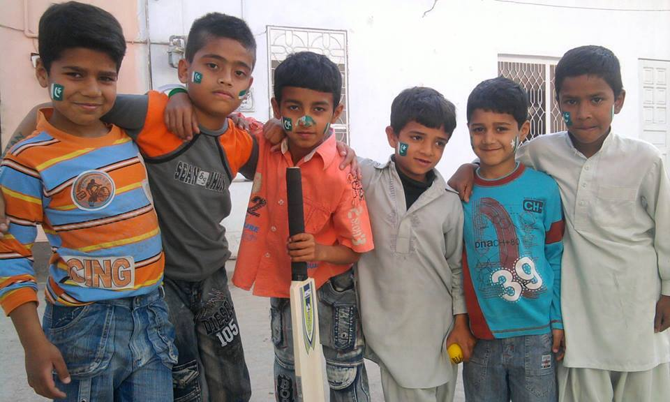

Muhammad Aqib Abdullah Mughal
Student
While it’s possible to use Django's ORM with Flask, it’s not
recommended due to the complexity and lack of integration between
the two frameworks. If you want to use Django's database and
authentication system, it’s better to use Django for the entire
project.
Contact
Address
Wah Cantt
Phone
0348-7411645
E-mail
alphasigma@gmail.com

Skills
Communication Skills
Programming
Maths
Python
Work History
2012-Current
Dhanday Wala
Hello There it is the fist point of my CV
Hello Its 2nd point for my CV Its also good doing Web
development
same wiht this just it is the 3rd point in my empty CV
Work History
2012-Current
Bachelors in SE
COMSATS Wah Campus
2012-2020
2012-2018
SSC
Sir Syed College Wah Cantt